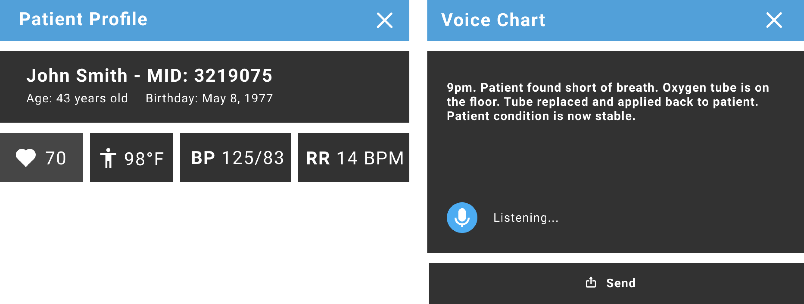
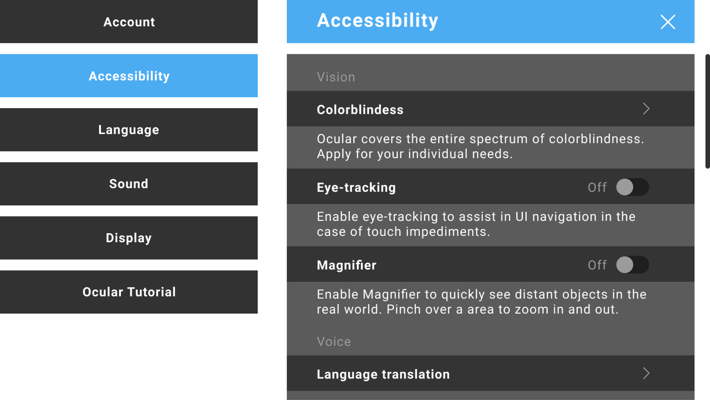

USER RESEARCH
I conducted a survey from 13 Registered Nurses who have been
in the field for at least 25 years with 61.5% who are over the age of 50.
A clear look at the age gap between young nurses and aging veterans, I deeply thought about the UX and accessibility.
A clear look at the age gap between young nurses and aging veterans, I deeply thought about the UX and accessibility.

41.7% of responders were interested in the idea of Extended Reality devices.

WHAT DOES A RN'S SHIFT LOOK LIKE?
Note: Results are from night-shift nurses at a local hospital in my area.
Practices may differ to other hospitals.
Day Coordinator assigns night shift nurses to at least 5 patients. However, the amount may vary depending on the current situation.
1. Nurses check paper assignments at nurse stations.
2. Short meeting of all nurses with floor coordinator.
3. Review patient list and report to corresponding day nurse.
4. Attend to patients.
5. Perform head-to-toe assessments.
Assessments include vital checks, ordering medicine, administering medicine and maintaing doctor's orders.
6. Return to desk and chart patient conditions.
Day Coordinator assigns night shift nurses to at least 5 patients. However, the amount may vary depending on the current situation.
1. Nurses check paper assignments at nurse stations.
2. Short meeting of all nurses with floor coordinator.
3. Review patient list and report to corresponding day nurse.
4. Attend to patients.
5. Perform head-to-toe assessments.
Assessments include vital checks, ordering medicine, administering medicine and maintaing doctor's orders.
6. Return to desk and chart patient conditions.
The Problems
PATIENT CHARTING
From my survey, responders addressed the difficulties of documenting patient information.
During head-to-toe assessments, nurses write down any unusual conditions on paper, but usually rely on memory to document the rest of the assessments onto computer.
This results in cognitive overload as nurses try to remember important information while multi-tasking in an ever-changing environment. Accurate and detailed charting is critical for nurses and the well-being of patients. Nursing records are the only proof that protects nurses from legal actions if claims are brought against them.
By law in many countries, if it wasn't recorded, it never happened.
This results in cognitive overload as nurses try to remember important information while multi-tasking in an ever-changing environment. Accurate and detailed charting is critical for nurses and the well-being of patients. Nursing records are the only proof that protects nurses from legal actions if claims are brought against them.
By law in many countries, if it wasn't recorded, it never happened.
DEVELOPING SOLUTIONS BASED ON USER FEEDBACK
Improving Work Efficiency
• Through research, AR became the most optimal technological solution for this case scenario. It can create a faster and more efficient work environment for nurses with many options that can improve workflow, such as voice and eye-tracking.
Accessbility
• Current accessibility options opens personalization in many smart devices such as the Apple iPhone. However, XR devices could elevate the experience of accessibility. Wouldn't it be cool to have a device that can zoom into distant objects by "pinching" the location?
• Through research, AR became the most optimal technological solution for this case scenario. It can create a faster and more efficient work environment for nurses with many options that can improve workflow, such as voice and eye-tracking.
Accessbility
• Current accessibility options opens personalization in many smart devices such as the Apple iPhone. However, XR devices could elevate the experience of accessibility. Wouldn't it be cool to have a device that can zoom into distant objects by "pinching" the location?
Ideation
STORYBOARD

PROTOTYPING
The prototyping tools I currently use weren't the best resources to create and test in a 3D space.
Regardless, I used what I currently have access to test the user experience and visualize the most
optimal solution for the problem.
Solutions
ENHANCED PATIENT ASSESSMENTS
Nurses no longer have to rely on memory to complete assessments.
Ocular provides voice charting that documents all information addressed by nurses. After assessments,
nurses can send the recorded data to their computers for revisions.

ACCESSIBILITY DESIGN
Ocular has a wide range of accessible settings to help improve a nurse's workflow.

Conclusion
WHAT I LEARNED
This project was definitely a challenge to stay motivated with. Diving into a
technology that is still in its infancy, along with so many unknowns, made me feel like an imposter.
For future XR projects, I will invest in equipment and programs, such as the Oculus and Unity, to properly develop prototypes. I am filled with excitement to learn more about XR and put all that knowledge into practice. The next step is to start grinding in my virtual office.
For future XR projects, I will invest in equipment and programs, such as the Oculus and Unity, to properly develop prototypes. I am filled with excitement to learn more about XR and put all that knowledge into practice. The next step is to start grinding in my virtual office.